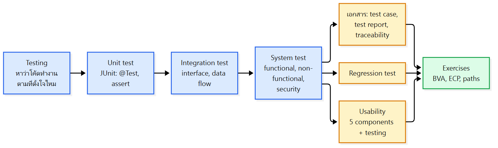
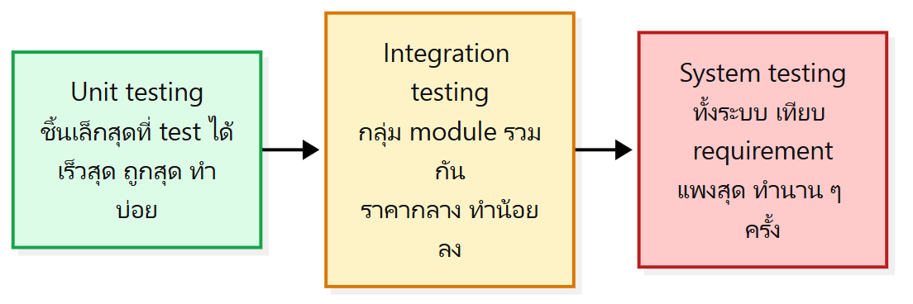
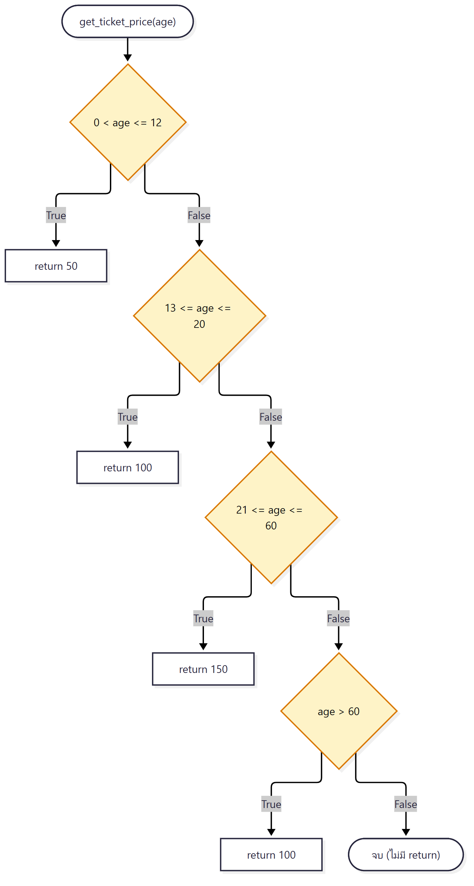

ภาพรวมบทนี้: L12 ปูพื้นเรื่อง testing กับเทคนิค black-box/white-box บทนี้ลงรายละเอียด 3 ระดับของการ test (test phases): unit (พร้อม JUnit), integration และ system ต่อด้วยเอกสารที่ใช้ (test case, test report, traceability), regression testing, software quality model, usability testing และ best practices
ท้ายบทมี Exercises ทบทวน BVA, ECP และ path analysis (Exercise 5–8)

1. Testing คืออะไร และมี test phases อะไรบ้าง?
แก่นtesting คือการหาว่าโค้ดทำงานตามที่ตั้งใจไหม แบ่งเป็น 3 phase จากเล็กไปใหญ่: unit (เร็ว ถูก ทำบ่อย) → integration → system (ทั้งระบบ แพง ทำนาน ๆ ครั้ง)
Testing (สไลด์ 4):
- กิจกรรมหาว่าโค้ดชิ้นหนึ่ง (method, class, program) ทำงานตามพฤติกรรมที่ตั้งใจ ไหม
- กระบวนการประเมินซอฟต์แวร์ว่า ถูกต้อง (correctness), ครบ (completeness) และมีคุณภาพ (quality)
- หา bug ได้เร็ว ลดต้นทุนและเวลาในขั้นหลัง
- เพิ่ม ความมั่นใจ ใน reliability และ functionality
Test phases (สไลด์ 5):

| Phase | ทดสอบอะไร | ขนาด / ต้นทุน / ความถี่ |
|---|---|---|
| Unit testing | หน่วยย่อยของ source code (= ส่วนที่เล็กที่สุดที่ test ได้) | test เล็กที่สุด, รันเร็วสุด, ต้นทุนต่ำสุด, ทำบ่อย |
| Integration testing | กลุ่มของ module ที่รวมกัน | ทดสอบ unit ที่รวมกัน, ต้นทุนปานกลาง, รันน้อยลง |
| System testing | ระบบที่รวมครบแล้ว (ประเมินว่าตรง requirement ไหม) | test ทั้งระบบ, ต้นทุนสูงสุด, รันไม่บ่อย |
2. Unit test ที่ดีเป็นยังไง?
แก่นunit test ทำให้มั่นใจว่าแต่ละ function ทำงานถูกก่อนรวมกับส่วนอื่น และ test ที่ดีต้อง test ทีละ function, รันเร็ว, รันอัตโนมัติได้ และได้ผลเหมือนเดิมทุกครั้ง
- จุดประสงค์: ให้แต่ละ function ทำงานตามที่ตั้งใจก่อน integrate
- Characteristics of good unit tests:
| คุณสมบัติ | ความหมาย |
|---|---|
| โฟกัสทีละ function/method | ไม่พึ่งส่วนอื่น |
| รันเร็ว | test ได้ต่อเนื่องระหว่างพัฒนา |
| รันอัตโนมัติได้ง่าย | เป็นส่วนหนึ่งของ CI/CD pipeline |
| ผลเหมือนเดิมทุกครั้ง | ไม่ขึ้นกับปัจจัยภายนอก |
3. JUnit ใช้ยังไง?
แก่นJUnit เป็น unit testing framework มาตรฐานของ Java ใช้ annotation @Test บอกว่า method ไหนเป็น test และใช้ assertion methods เช็กผลที่คาดไว้
3.1 JUnit คืออะไร?
- พัฒนาช่วง กลางยุค 90
- เป็น เครื่องมือมาตรฐานของ Test-Driven Development (TDD) ใน Java
- JUnit test generator อยู่ใน Java IDE หลายตัวแล้ว
- เป็นส่วนหนึ่งของ unit testing frameworks
- ลิงก์เป็น JAR ตอน compile
- มี Annotation ระบุ test method และ utility methods สำหรับ assert ผลที่คาด
- มี Test runners สำหรับรัน test
- รวมกับ Eclipse, Ant, Maven ได้ง่าย
- tool unit testing ของ Java อื่น ๆ (สไลด์ 8): Jmockit, Cactus, Cobertura, Dbunit, dJUnit … มีมากกว่า 30 tools
3.2 JUnit Checklist
- Initialize
- Write test cases
- Write a test suite
- Execute test suite
3.3 Annotation
- tag ที่กำหนดไว้แล้ว ใส่ในโค้ดเพื่อ บอก JUnit ว่าจะรัน test method เมื่อไหร่
@Test= บอก JUnit ว่า method นี้ รันเป็น test ได้
3.4 Assertion methods
| # | Method | เช็กอะไร |
|---|---|---|
| 1 | assertEquals(expected, actual) |
primitive/object เท่ากัน |
| 2 | assertTrue(condition) |
เงื่อนไข เป็นจริง |
| 3 | assertFalse(condition) |
เงื่อนไข เป็นเท็จ |
| 4 | assertNotNull(object) |
object ไม่ใช่ null |
| 5 | assertNull(object) |
object เป็น null |
| 6 | assertSame(object1, object2) |
2 reference ชี้ object เดียวกัน |
| 7 | assertNotSame(object1, object2) |
2 reference ไม่ได้ชี้ object เดียวกัน |
| 8 | assertArrayEquals(expectedArray, resultArray) |
2 array เท่ากัน |
ตัวอย่างการใช้ (สไลด์ 13):
@Test
public void testAssertions() {
//test data
String str1 = new String ("abc");
String str2 = new String ("abc");
String str3 = null;
String str4 = "abc";
String str5 = "abc";
int val1 = 5;
int val2 = 6;
String[] expectedArray = {"one", "two", "three"};
String[] resultArray = {"one", "two", "three"};
//Check that two objects are equal
assertEquals(str1, str2);
//Check that a condition is true
assertTrue (val1 < val2);
//Check that a condition is false
assertFalse(val1 > val2);
//Check that an object isn't null
assertNotNull(str1);
//Check that an object is null
assertNull(str3);
⚠️ assertEquals vs assertSame:
assertEqualsเช็กว่า ค่าเท่ากัน ส่วนassertSameเช็กว่า เป็น object เดียวกัน (reference เดียวกัน)
3.5 JUnit Example
class ที่ถูก test:
public class Student {
public String firstName;
public String lastName;
public String ID;
public int birthYear;
public Student(String firstName, String lastName, String id, int birthYear) {
this.firstName = firstName;
this.lastName = lastName;
this.ID = id;
this.birthYear = birthYear;
}
public String getDisplayName() {
return firstName + " " + lastName;
}
}
test class:
import static org.junit.Assert.assertEquals;
import org.junit.Test;
public class StudentTest {
@Test
public void testGetDisplayNameSpace() {
Student stu = new Student("Morakot","Choetkiertikul", "99999999",2010);
String displayName = stu.getDisplayName();
assertEquals("Morakot Choetkiertikul", displayName);
}
@Test
public void testGetDisplayNameNospace() {
Student stu = new Student("Morakot","Choetkiertikul", "99999999",2010);
String displayName = stu.getDisplayName();
assertEquals("MorakotChoetkiertikul", displayName);
}
}
- ในรูปสไลด์
testGetDisplayNameSpaceมีเครื่องหมาย ✓ (ผ่าน) ส่วนtestGetDisplayNameNospaceมีเครื่องหมาย ✗ (ไม่ผ่าน) เพราะgetDisplayName()ใส่ช่องว่างระหว่างชื่อกับนามสกุลเสมอ ผลจริงจึงเป็น"Morakot Choetkiertikul"ไม่ตรงกับที่คาด"MorakotChoetkiertikul"
4. Integration testing คืออะไร และต่างจาก unit test ยังไง?
แก่นintegration testing ทดสอบปฏิสัมพันธ์ระหว่าง unit/component ที่รวมกัน หาปัญหาที่ interface, data flow และ dependency แต่ทดแทน unit test ที่ไม่พอไม่ได้
4.1 Integration testing
- ทดสอบ ปฏิสัมพันธ์ระหว่าง unit/component ที่รวมกัน เพื่อหาปัญหาการสื่อสาร
- หาปัญหาที่ interface, data flow และ dependency ระหว่าง component
- ตัวอย่าง: test function ที่ พึ่ง database connection ซึ่งต้องทำงานร่วมกันทั้งคู่
- เป็น สะพานเชื่อม ระหว่าง unit test กับ system test โดยเน้นที่ การเชื่อมต่อของ component
4.2 เทียบ 3 ระดับ
| Module/Unit test | Integration test | System test | |
|---|---|---|---|
| Specification | Module interface | Interface specs, module breakdown | Requirements specification |
| Visible structure | Coding details | Modular structure (software architecture) | — none — |
| Scaffolding required | Some | Often extensive | Some |
| Looking for faults in | Modules | Interactions, compatibility | System functionality |
💡 สังเกต: ยิ่งระดับสูง ยิ่งมองเห็นโครงสร้างภายในน้อยลง (coding details → architecture → ไม่เห็นเลย) และ integration ต้องใช้ scaffolding มากที่สุด
4.3 Integration vs Unit testing
- Unit testing เป็นรากฐานที่ขาดไม่ได้
- ระดับ unit ควบคุมและมองเห็นได้มากที่สุด (maximum controllability and visibility)
- Integration testing ไม่มีวันทดแทน unit testing ที่ไม่พอได้
- Integration testing ใช้ ตรวจกระบวนการ (process check) ได้:
- ถ้า integration test เจอ module fault → แสดงว่า unit testing ไม่พอ
- ถ้าเจอ integration fault ที่ interface ระหว่าง module ที่ implement ถูกแล้ว → สาเหตุอยู่ที่ module breakdown และ interface specifications
5. System testing คืออะไร?
แก่นsystem testing ทดสอบระบบที่รวมครบแล้วว่าตรง functional และ non-functional requirements และทำงานได้ในสถานการณ์จริง แบ่งเป็น functional, non-functional และ security testing
- ทดสอบ ระบบที่รวมครบ ว่าตรง functional และ non-functional requirements
- ให้ระบบ ทำงานเป็นหนึ่งเดียว และทำงานตามคาดใน สถานการณ์จริง (real-world scenarios)
| ประเภท | ตรวจอะไร |
|---|---|
| Functional testing | ระบบทำ function ที่คาดไว้ได้ |
| Non-functional testing | performance, usability, reliability |
| Security testing | ช่องโหว่ที่อาจเกิด |
- สไลด์ 19 ใช้รูป Validation and Verification Activities (Naik & Tripathy) เดียวกับ L12 สไลด์ 14: Requirements ↔ Acceptance (validation), High-Level Design ↔ System, Detailed Design ↔ Integration, Coding ↔ Unit (verification)
6. เอกสาร testing: test case, test report, traceability
แก่นtest case บันทึกขั้นตอน ข้อมูล และผลที่คาดของการ test แต่ละอัน, test report สรุปผลการ test ทั้งรอบ และ traceability matrix โยง requirement ไปหา test case
6.1 Test Case Template
ตัวอย่างในสไลด์:
| ช่อง | ตัวอย่าง |
|---|---|
| Test Case ID | Fun_10 |
| Test Priority (Low/Medium/High) | Med |
| Module Name | Google login screen |
| Test Title | Verify login with valid username and password |
| Description | Test the Google login page |
| Test Designed by / date, Test Executed by / date | <Name>, <Date> |
| Pre-conditions | User has valid username and password |
| Dependencies | (ว่าง) |
ตารางขั้นตอน:
| Step | Test Steps | Test Data | Expected Result | Actual Result | Status |
|---|---|---|---|---|---|
| 1 | Navigate to login page | User = example@gmail.com | User should be able to login | User is navigated to dashboard with successful login | Pass |
| 2 | Provide valid username | Password: 1234 | |||
| 3 | Provide valid password | ||||
| 4 | Click on Login button |
- Post-conditions: User is validated with database and successfully login to account. The account session details are logged in database.
6.2 Test Report
ตัวอย่าง (Test Cycle: System Test):
- ส่วนสรุป: EXECUTED = PASSED 130 + FAILED 0 → (Total) TESTS EXECUTED 130; PENDING 0, IN PROGRESS 0, BLOCKED 0 → (Sub-Total) TEST PLANNED 130
- ส่วนรายละเอียดต่อ function: คอลัมน์ Functions, Description, % TCs Executed, % TCs Passed, TCs pending, Priority, Remarks
- เช่น New Customer, Edit Customer, New Account, Edit Account, Delete Account, Delete customer, Mini Statement, Customized Statement — ทุกตัว executed 100%, passed 100%, pending 0, priority High
6.3 Traceability Record
Requirements Traceability Matrix (RTM) – ตัวอย่าง Online Flight Booking Application: โยง Business Requirement → Functional Requirement → Test Case
| Business Req ID | Business Requirement | Functional Req ID | Functional Requirement / Use Case | Priority | Test Case ID |
|---|---|---|---|---|---|
| BR_1 | Reservation Module | FR_1 | One Way Ticket booking | High | TC#001, TC#002 |
| FR_2 | Round Way Ticket | TC#003, TC#004 | |||
| FR_3 | Multicity Ticket booking | High | TC#005, TC#006 | ||
| BR_2 | Payment Module | FR_4 | By Credit Card | High | TC#007, TC#008 |
| FR_5 | By Debit Card | High | TC#009 | ||
| FR_6 | By Reward Points | Medium | TC#010, TC#011 |
💡 เชื่อมกับ L10: "Traceability" เป็น 1 ใน 6 คุณสมบัติของ good implementation ตาราง RTM คือตัวอย่างการตามรอย requirement ไปถึง test case
7. Regression testing ใช้เมื่อไหร่?
แก่นregression testing เช็กว่าการแก้โค้ดล่าสุดไม่ได้สร้าง bug ใหม่หรือทำให้ของที่เคยใช้ได้พัง รันหลังแก้ bug, เพิ่ม feature, ปรับ performance และระหว่าง maintenance
- ทดสอบว่า การเปลี่ยนโค้ดล่าสุดไม่ทำให้เกิด bug ใหม่ หรือ ทำให้ functionality เดิมถอยหลัง (regress)
- ยืนยันว่า update (bug fix, feature ใหม่) ไม่ทำให้ส่วนที่เคยทำงานได้พัง
- ปกติรัน หลัง code update ทั้ง fixes, enhancements, optimizations
- ถ้าเพิ่ม feature ใหม่ regression test จะเช็กว่าไม่ได้ กระทบส่วนอื่นโดยไม่ตั้งใจ
เมื่อไหร่ควรใช้:
- After Bug Fixes
- After New Features or Enhancement
- After Performance Improvements
- During Routine Maintenance
8. Software quality model และ usability
แก่นคุณภาพซอฟต์แวร์มี 8 ด้าน (จาก iso25000) หนึ่งในนั้นคือ usability = ใช้ง่ายและมีประสิทธิภาพแค่ไหน มี 5 องค์ประกอบ: learnability, efficiency, memorability, errors, satisfaction
8.1 Software Quality Models
SOFTWARE PRODUCT QUALITY แบ่ง 8 ด้าน:
| ด้าน | คุณลักษณะย่อย |
|---|---|
| Functional Suitability | Functional Completeness, Functional Correctness, Functional Appropriateness |
| Performance Efficiency | Time Behaviour, Resource Utilization, Capacity |
| Compatibility | Co-existence, Interoperability |
| Usability | Appropriateness Recognizability, Learnability, Operability, User Error Protection, User Interface Aesthetics, Accessibility |
| Reliability | Maturity, Availability, Fault Tolerance, Recoverability |
| Security | Confidentiality, Integrity, Non-repudiation, Authenticity, Accountability |
| Maintainability | Modularity, Reusability, Analysability, Modifiability, Testability |
| Portability | Adaptability, Installability, Replaceability |
8.2 Usability in software
- Usability = วัดว่าซอฟต์แวร์ ใช้ง่ายและมีประสิทธิภาพ แค่ไหนสำหรับผู้ใช้ในการบรรลุเป้าหมาย
- ซอฟต์แวร์ที่ใช้ง่าย มีโอกาสถูกนำไปใช้มากกว่า
- เพิ่ม productivity ผู้ใช้ ลดเวลาและแรงในการทำงาน
5 components ของ usability:
| Component | คำถาม |
|---|---|
| Learnability | ผู้ใช้ทำงานให้สำเร็จได้ง่ายแค่ไหน (How easy is it for users to accomplish a task) |
| Efficiency | ผู้ใช้ทำงานได้เร็วแค่ไหน |
| Memorability | กลับมาใช้อีกครั้ง คล่องเหมือนเดิมได้ง่ายแค่ไหน (re-establish proficiency) |
| Errors | ผู้ใช้ทำผิดกี่ครั้ง |
| Satisfaction | ใช้แล้วรู้สึกดีแค่ไหน (how pleasant) |
💡 จำ 5 คำ: L-E-M-E-S (Learnability, Efficiency, Memorability, Errors, Satisfaction)
9. Usability testing ทำยังไง?
แก่นให้ผู้ใช้ในอนาคตลองใช้จริงเพื่อดูว่าใช้งานยังไงและตรงเป้าหมายไหม ใช้วิธี task-based, A/B testing, survey และวัด performance เป็นตัวเลข
- Usability testing: ประเมิน product โดย ทดสอบกับผู้ใช้ในอนาคต ได้ข้อมูลตรงว่าเขาใช้ระบบยังไง
- เช็กว่า product ตรงเป้าหมายและ requirement ที่ตั้งไว้ ไหม
Common methods (สไลด์ 29):
| วิธี | ทำยังไง |
|---|---|
| Task-Based Testing | ผู้ใช้ทำ task ที่กำหนด ผู้สังเกตหา pain points |
| A/B Testing | เทียบ 2 interface design ว่าแบบไหนดีกว่า |
| Surveys and Questionnaires | เก็บ feedback เรื่อง ความพึงพอใจ และความรู้สึกว่าใช้ง่าย |
Performance Measurement (สไลด์ 30) – ได้ข้อมูล เชิงปริมาณ เช่น
- เวลาที่ผู้ใช้ใช้ทำ task หนึ่ง
- จำนวน task ประเภทต่าง ๆ ที่ทำได้ในเวลาที่กำหนด
- อัตราส่วนระหว่าง interaction ที่สำเร็จกับ error
- เวลาที่ใช้กู้คืนจาก error
- จำนวน error ของผู้ใช้
- จำนวนคำสั่ง/feature ที่ผู้ใช้ไม่เคยใช้
- ความถี่ในการเปิดคู่มือ/help และเวลาที่ใช้
10. Best practices in testing
แก่นเขียนโค้ดให้ modular เพื่อ test ง่าย, ใส่ test ใน CI/CD, test สม่ำเสมอ, จำลอง dependency และดู coverage ที่มีความหมายมากกว่าไล่ให้ถึง 100%
- ทำโค้ดให้ modular และ isolated เพื่อให้ test ง่าย
- รวม testing เข้า CI/CD pipeline เพื่อรักษาคุณภาพต่อเนื่อง
- test สม่ำเสมอ ลดความเสี่ยงที่ bug หลุดไปโดยไม่มีใครเห็น
- จำลอง (simulate) dependency ให้ test มีประสิทธิภาพขึ้น
- ใช้ coverage metrics ดูว่าโค้ดถูก test แค่ไหน โดยเน้น coverage ที่มีความหมาย มากกว่าไล่ให้ถึง 100%
11. Exercises 5–8
แก่นทบทวน BVA (ตั๋วอุทยาน, ส่วนลด), ECP (ส่วนลด) และ path analysis (โค้ด Zoo)
11.1 Exercise 5 (จาก L12) – BVA ตั๋วอุทยาน
โจทย์: เด็ก < 12 ฟรี | ผู้ใหญ่ 18–60 จ่าย 200 | อายุ < 18 และ > 60 จ่าย 100
| Class | All Cases | Belonging Cases | Reduced Class | Expected Result |
|---|---|---|---|---|
| Invalid (< 0) | −1, 0 | −1 | −1 | Error: Invalid Age |
| 0–11 | −1, 0, 1 / 10, 11, 12 | 0, 1, 10, 11 | 0, 11 | Free |
| 12–17 | 11, 12, 13 / 16, 17, 18 | 12, 13, 16, 17 | 12, 17 | 100 |
| 18–60 | 17, 18, 19 / 59, 60, 61 | 18, 19, 59, 60 | 18, 60 | 200 |
| > 61 | 60, 61 | 61 | 61 | 100 |
⚠️ เหมือนใน L12: class สุดท้ายเขียน "> 61" แต่ทดสอบด้วยค่า 61 ตามโจทย์ควรเป็น "> 60"
11.2 Exercise 6 – ECP ส่วนลดสมาชิก
โจทย์:
- ยอดซื้อ < 500: ไม่มีส่วนลด
- 500–999: ลด 5%
- 1,000–4,999: ลด 10%
- > 5,000: ลด 20%
- > 100,000: invalid input
เฉลยในสไลด์:
| Class | Representative | Expected Result |
|---|---|---|
| ≤ 0 | −5 | Invalid input |
| 1 – 500 | 450 | No discount |
| 501 – 999 | 658 | 5% discount |
| 1,000 – 4,999 | 2,599 | 10% discount |
| 5,000 – 100,000 | 45,100 | 20% discount |
| > 100,000 | 111,111 | Invalid input |
⚠️ class ในเฉลยไม่ตรงกับโจทย์ 2 จุด:
- โจทย์บอก < 500 ไม่มีส่วนลด, 500–999 ลด 5% แต่เฉลยใช้ class 1–500 ไม่มีส่วนลด และ 501–999 ลด 5% (ยอด 500 พอดีจึงขัดกัน)
- โจทย์บอก 1,000–4,999 ลด 10% และ > 5,000 ลด 20% ยอด 5,000 พอดีจึงไม่อยู่ในเงื่อนไขไหน แต่เฉลยใส่ 5,000 ไว้ใน class 20%
ถ้าออกสอบให้เช็กกับอาจารย์ว่ายึดโจทย์หรือเฉลย
11.3 Exercise 7 – BVA ส่วนลดสมาชิก
โจทย์เดียวกับ Exercise 6 เฉลยในสไลด์:
| Class | All Cases | Belonging Cases | Reduced Class | Expected Result |
|---|---|---|---|---|
| ≤ 0 | −1, 0 | −1 | −1 | Error: Invalid input |
| 1 – 500 | 0, 1, 2 / 499, 500, 501 | 1, 2, 499, 500 | 1, 500 | No discount |
| 501 – 999 | 500, 501, 502 / 998, 999, 1000 | 501, 502, 998, 999 | 501, 999 | 5% discount |
| 1,000 – 4,999 | 999, 1000, 1001 / 4998, 4999, 5000 | 1000, 1001, 4998, 4999 | 1000, 4999 | 10% discount |
| 5,000 – 100,000 | 4999, 5000, 5001 / 99999, 100000, 100001 | 5000, 5001, 99999, 100000 | 5000, 100000 | 20% discount |
| > 100,000 | 100000, 100001 | 100,001 | 100001 | Error: Invalid input |
⚠️ ใช้ class เดียวกับเฉลย Exercise 6 จึงมีจุดขัดกับโจทย์เหมือนกัน (500 และ 5,000)
⚠️ class "≤ 0" มี Belonging Case เป็น −1 แต่ 0 ก็อยู่ใน class "≤ 0" ด้วย (ต่างจากรูปแบบใน L12 ที่ class Low ใช้ −1 เพราะ 0 อยู่ class ถัดไป)
11.4 Exercise 8 – Path analysis โค้ด Zoo
โจทย์: จาก source code ที่ให้
- เขียน flow chart ที่สะท้อนการทำงานของโค้ด
- คำนวณจำนวน independent path
- ระบุ path ที่เป็นไปได้ทั้งหมด
- ระบุ linearly independent set of paths ทุกชุด
class Zoo:
def get_ticket_price(self, age):
if 0 < age <= 12:
return 50
elif 13 <= age <= 20:
return 100
elif 21 <= age <= 60:
return 150
elif age > 60:
return 100
⚠️ หน้า "Answer to Exercise 8" (สไลด์ 40) ในไฟล์มีแค่โค้ด ไม่มีเฉลย แนวคิดด้านล่างใช้วิธีจาก L12 (สไลด์ 36) ไม่ใช่เฉลยของอาจารย์
flow chart ตามโค้ด:

- decision 4 จุด (
if+elif3 ตัว) → independent paths = 4 + 1 = 5 - path ที่เป็นไปได้ (if-elif ต่อกันเป็นสาย ทุก path จึงเป็น independent):
- D1 True → return 50
- D1 False → D2 True → return 100
- D1 False → D2 False → D3 True → return 150
- D1 False → D2 False → D3 False → D4 True → return 100
- D1 False → D2 False → D3 False → D4 False → จบโดยไม่ return (เช่น age ≤ 0)
คำศัพท์สำคัญ
| คำศัพท์ | ความหมาย | จำง่าย ๆ ว่า |
|---|---|---|
| Test phases | unit → integration → system | เล็ก → ใหญ่ |
| Unit testing | test ส่วนที่เล็กที่สุดที่ test ได้ | ถูก เร็ว บ่อย |
| Integration testing | test ปฏิสัมพันธ์ของ module ที่รวมกัน | interface, data flow |
| System testing | test ระบบครบเทียบ requirement | แพง นาน ๆ ครั้ง |
| JUnit | unit testing framework มาตรฐานของ Java | TDD |
@Test |
annotation บอกว่า method เป็น test | |
| Assertion | method เช็กผลที่คาด เช่น assertEquals | |
| Test suite | ชุดของ test case | JUnit checklist ข้อ 3 |
| Scaffolding | โครงช่วย test (integration ต้องใช้มาก) | |
| Test case template | เอกสาร ID, steps, data, expected/actual, status | |
| Test report | สรุปผล passed/failed/pending | |
| RTM | Requirements Traceability Matrix | BR → FR → TC |
| Regression testing | เช็กว่าของใหม่ไม่ทำของเดิมพัง | |
| Usability | ใช้ง่ายและมีประสิทธิภาพแค่ไหน | 5 components |
| Learnability / Memorability | ทำครั้งแรกได้ง่าย / กลับมาใช้แล้วคล่องเหมือนเดิม | |
| A/B testing | เทียบ 2 design | |
| Task-based testing | ให้ผู้ใช้ทำ task แล้วหา pain point | |
| CI/CD | pipeline ที่ test อัตโนมัติ |
สรุปท้ายบท / จุดที่มักออกสอบ
- ⭐ 3 test phases + ขนาด/ต้นทุน/ความถี่ (unit ถูกสุด บ่อยสุด, system แพงสุด นาน ๆ ครั้ง)
- ⭐ Good unit test 4 ข้อ: ทีละ function, เร็ว, อัตโนมัติ (CI/CD), ผลเหมือนเดิม
- ⭐ JUnit:
@Test, 8 assertion methods (assertEquals vs assertSame), checklist 4 ขั้น, ทำไม test Nospace ไม่ผ่าน - ⭐ ตารางเทียบ unit/integration/system (specification, visible structure, scaffolding, faults)
- ⭐ Integration ทดแทน unit ไม่ได้ และใช้เป็น process check
- ⭐ System test 3 ประเภท: functional, non-functional (performance, usability, reliability), security
- ⭐ Regression test ใช้เมื่อไหร่ 4 กรณี
- ⭐ 8 ด้านของ software product quality
- ⭐ Usability 5 components และ 3 วิธี usability testing
- ⭐ ทำ Exercise 5–8 ให้คล่อง (ระวังจุดที่เฉลยขัดกับโจทย์)
คู่ที่มักสับสน
| A | B | ต่างกันตรงไหน |
|---|---|---|
| Unit test | Integration test | module เดียว (coding details) vs ปฏิสัมพันธ์ระหว่าง module (architecture) |
| Integration test | System test | หา fault ที่ interaction vs หา fault ที่ system functionality |
| Functional testing | Non-functional testing | ทำ function ได้ไหม vs performance, usability, reliability |
| assertEquals | assertSame | ค่าเท่ากัน vs object เดียวกัน |
| assertNull | assertNotNull | เป็น null vs ไม่เป็น null |
| Test case | Test report | ขั้นตอน test 1 อัน vs สรุปผลทั้งรอบ |
| Regression testing | Unit testing | เช็กว่าของเดิมไม่พังหลังแก้ vs เช็กหน่วยเล็กสุด |
| Learnability | Memorability | ครั้งแรกทำได้ง่ายไหม vs กลับมาใช้ใหม่คล่องไหม |
| Efficiency (usability) | Performance Efficiency (quality) | ผู้ใช้ทำงานได้เร็วแค่ไหน vs ระบบใช้เวลา/ทรัพยากรแค่ไหน |
| Module fault ใน integration | Interface fault ระหว่าง module ที่ถูก | unit test ไม่พอ vs ปัญหาที่ module breakdown/interface spec |